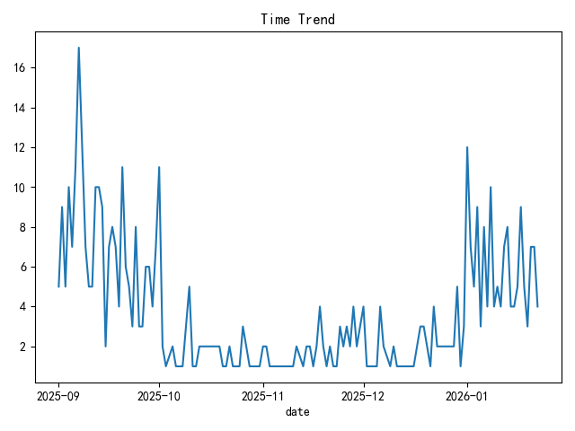

03 / Machine Learning · NLP
Campus QA
Data Analysis.
基于校园问答数据，尝试通过问题类别分布、时间趋势、文本特征与机器学习发现常见信息需求。

01 / The problem
如何理解校园问答中的信息需求？
校园问答通常是自由文本，问题主题与提问时间存在差异。通过统计和文本建模，可以探索常见问题类别以及不同时间的需求变化。
该项目是面向学习与探索的数据挖掘作品，不等同于已经上线的 RAG 知识库问答产品。
02 / The approach
先分析，再建立文本模型
仓库使用 Pandas 处理问答 CSV 数据与时间字段，通过 Matplotlib 输出问题类别分布和时间趋势；代码还包含 TF-IDF 文本特征提取、KMeans 聚类和逻辑回归分类的实现。
01 / LOAD问答 CSV
时间解析
时间解析
02 / EDA类别分布
时间趋势
时间趋势
03 / TEXTTF-IDF
文本表示
文本表示
04 / MODELKMeans 聚类
逻辑回归
逻辑回归
目前展示的是仓库已有的真实 EDA 图表；聚类、分类模型的有效性仍需运行测试和量化评估，不能仅根据 README 判断效果。
03 / Actual screenshots
项目实际生成的图表
图片直接取自公开 GitHub 项目文件，而不是为了作品集重新绘制的概念图。点击可查看原图。

04 / Boundaries & next steps
补齐运行与评测证据
静态代码审核发现，text_analysis(df, image_dir) 定义需要两个参数，但实际调用只传入 df，运行到该步骤会报参数缺失错误；后续需要修复并进行从零运行测试。
当前文本向量器在数据集划分之前拟合全部文本，这会影响分类评测的严谨性。还应补充分层抽样、中文分词或中文文本特征适配、准确率与混淆矩阵等测试证据。
案例中的柱状图和趋势图均来自真实仓库；不展示尚未复核的模型准确率或虚构的问答效果。